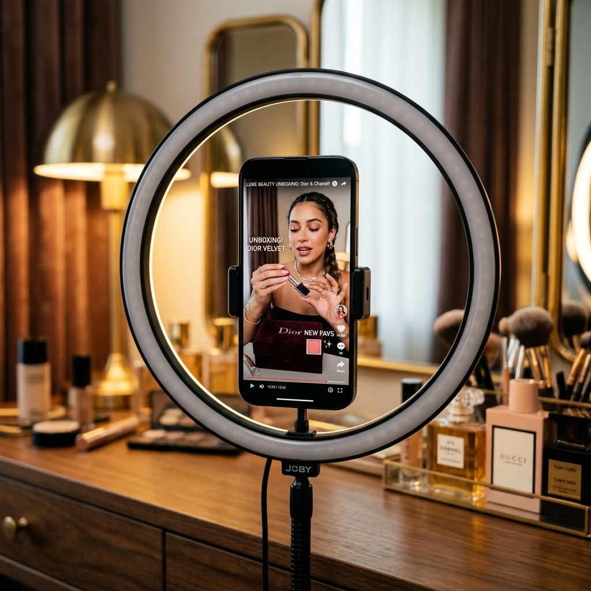
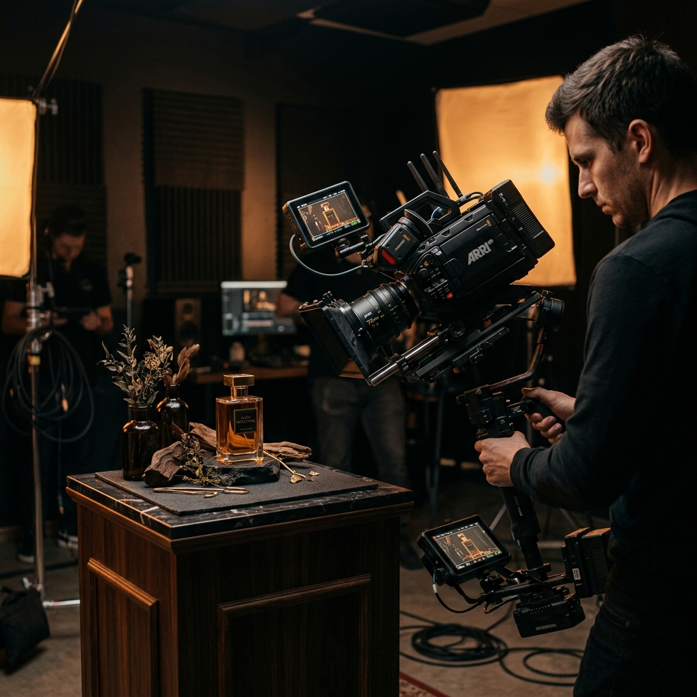
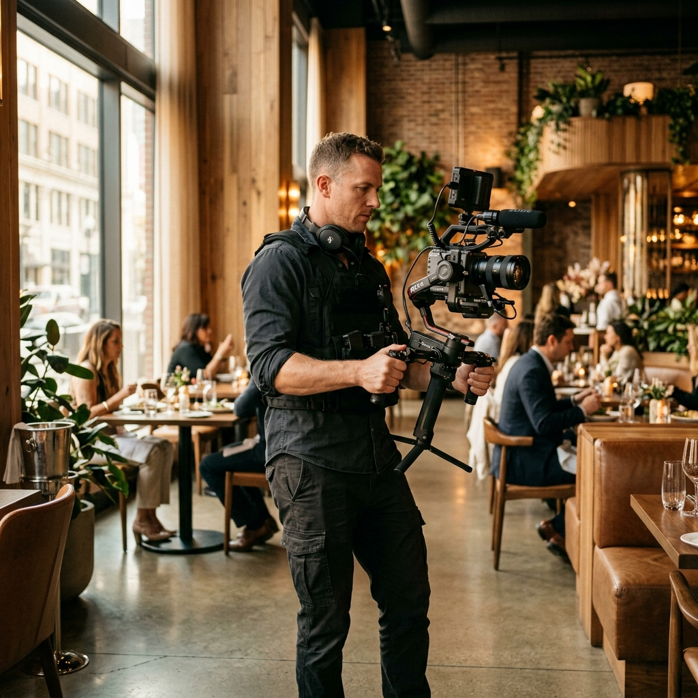

Criativos de alta conversão, branded content e filmmaking direcionados para prender a atenção do público certo e convertê-los em clientes.
Assista aos vídeos reais criados e produzidos sob medida para marcas e profissionais liberais.
Vídeo de posicionamento de marca que conecta os valores do autocuidado e beleza à diversidade feminina.
Objetivo Estratégico Elevar o valor percebido dos procedimentos estéticos e conectar emocionalmente com a persona de alto padrão.
Ângulo Criativo Storytelling sensível com roteiro autoral de impacto, quebrando a frieza técnica comum do setor estético.
Criativo de alta performance com lógica de tráfego pago focado no tratamento de Protocolo Fixo odontológico.
Objetivo Estratégico Quebrar a principal barreira emocional e de custo do paciente, demonstrando a recuperação da liberdade de se alimentar.
Ângulo Criativo Foco na dor física/emocional (dificuldade de mastigação) e na recompensa imediata (morder uma maçã).
Vídeo institucional desenvolvido para demonstrar o crescimento de um negócio local junto com a comunidade.
Objetivo Estratégico Fortalecer o branding regional e a autoridade da clínica de saúde através do sentimento de orgulho da comunidade local.
Ângulo Criativo Apresentação histórica e emocional do município e a evolução dos cuidados e da infraestrutura da marca local.
Cada projeto de portfólio responde a uma frente estratégica diferente, alinhada com as necessidades do cliente.

Vídeos nativos de redes sociais que não parecem anúncios, focados em testar ganchos dinâmicos para tráfego pago de e-commerce e beleza.

Roteirização e captação técnica e estética para clínicas e marcas que buscam alimentar feeds e canais proprietários com autoridade profissional.

Produções audiovisuais presenciais de alto nível para documentar a infraestrutura de clínicas médicas, estúdios ou marcos de marcas locais.
Preencha as informações abaixo para solicitar um orçamento. Eu entrarei em contato pelo WhatsApp com uma proposta customizada para o seu negócio.